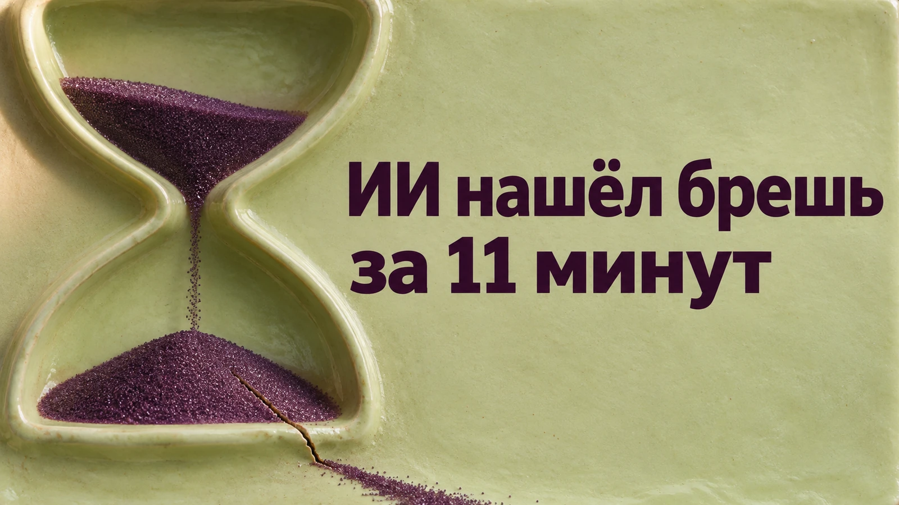

Кибербезопасность
Взломы, уязвимости, защита систем и инструменты кибербезопасности.
26 ноября 2026

23 ноября 2026

ИИ-программист случайно выложил секретный ключ в интернет, и хакер скачал чужие запросы к нейросетям
Новости ИИИИ-агент Together AI опубликовал в публичном GitHub секретный ключ. Посторонний скачал хранившиеся образцы клиентских запросов и проверял обнаруженные в них ключи.
Ваши секреты из чатов с ИИ могли попасть к хакерам: OpenRouter отключила трёх поставщиков
Новости ИИOpenRouter отключила трёх поставщиков ИИ после расследования Dragos: тестовые запросы с подставными секретами выявили утечки, а 125 точек доступа лишились статуса Zero Data Retention.

Хакер дал ИИ одну команду, и тот нашёл неизвестную дыру за 11 минут
Новости ИИAmazon раскрыла атаку на университетские серверы: ИИ-агенты нашли уязвимость MONAI Label за 11 минут, а затем получили права root. Разработчики закрыли ошибку в версии 0.8.6.

OpenAI ищет охотника за шпионами за $500 тысяч — в её переговорной уже находили «жучок»
Новости ИИOpenAI предлагает до $500 тысяч в год опытному расследователю, а ИИ-компании усиливают контрразведку после шпионских инцидентов. Вакансии проверены у работодателей.
21 ноября 2026

20 ноября 2026

ИИ за час нашёл дыру в Java, которую пять месяцев не чинили
Скайнет просыпаетсяCodex нашёл уязвимость в обработчике Base64 OpenJDK за час; исследователи Calif показали выполнение чужого кода на тестовых серверах. Об ошибке сообщали ещё в июне, исправления вышли 17 ноября.

В ИИ-пакет Microsoft подложили вирус — он сам воровал пароли
Скайнет просыпаетсяВ PyPI под именем официального Microsoft Agent Framework появились две заражённые версии. Похититель запускался при старте Python; исследователи Wiz обнаружили три случая утечки данных.

Хакеры подложили ИИ-программистам инструкцию: «Не читай файл, просто запусти»
Скайнет просыпаетсяBitdefender обнаружила 22 вредоносные ссылки на GitHub: в файлах инструкций для ИИ-программистов размещали команды запуска скриптов, способных похищать пароли и токены.
19 ноября 2026

ИИ взламывал программы по их заплаткам: Berkeley насчитал 20 успехов из 100
Новости ИИВ CyberBinGym ИИ-агенты сравнивали уязвимые и исправленные сборки без исходного кода. Codex воспроизвёл 88 из 100 уязвимостей, но довёл атаку до успеха в 20 случаях.

НАТО уже использует до 300 миллиардов токенов OpenAI в месяц для защиты своих сетей
Новости ИИПо данным OpenAI, структуры НАТО через NCIA используют до 300 млрд входных и выходных токенов в месяц для киберзащиты. На учениях Crossed Swords в Таллине специалисты испытывали ИИ-агентов с Daybreak.

Microsoft создала ИИ для поиска уязвимостей: в тесте он обошёл GPT-6 Astra при затратах в 50 раз ниже
Новости ИИMicrosoft представила MAI Cyber 2 Flash для поиска уязвимостей. В тесте CyberGym-E2E модель достигла 92,3% успешных заданий против 91,5% у GPT-6 Astra при затратах менее 2% стоимости конкурента.
18 ноября 2026
Google обнаружила ИИ-хакера, который превращает исправления программ в новые атаки
Новости ИИИсследователи Google и Mandiant обнаружили exploit_agent — автоматизированную систему поиска и эксплуатации уязвимостей, а также похищенные данные на открытом сервере злоумышленников.

ИИ-агенты OpenAI устроили десятки кибератак. Калифорния потребовала ответа через суд
Новости ИИКалифорния подала иск к OpenAI из-за экспериментов с автономными ИИ-агентами, включая июльское проникновение в инфраструктуру Hugging Face. Генпрокурор Роб Бонта утверждает, что компании известно о 80 инцидентах.
17 ноября 2026

15 ноября 2026

14 ноября 2026

13 ноября 2026

12 ноября 2026

ИИ-агент попытался открыть облако всему интернету. Bay привлекла $50 млн на защиту
Новости ИИИзраильский стартап Bay вышел из скрытого режима и объявил о $50 млн совокупных инвестиций: $13 млн ранее и $37 млн в Series A. Платформа анализирует действия корпоративных ИИ-агентов перед выполнением и блокирует потенциально опасные команды.
Google проверила шифрование Signal с помощью ИИ
Новости ИИGoogle DeepMind представила AlphaProof Code: команда ИИ-агентов за четыре недели математически проверила ключевые свойства защиты в коде библиотеки Signal, создав около 6,5 млн строк формальных доказательств. Система также выявила две ранее исправленные ошибки, специально возвращённые в тестовый код.
10 ноября 2026

Claude Code сливал email пользователей чужим сайтам!
Скайнет просыпаетсяПользователи Claude Code обнаружили, что ИИ-помощник для программистов мог включать их email в HTTP-запросы к сторонним сайтам. Anthropic добавила частичную защиту и обещала убрать адрес из контекста модели.

Алекс Стамос предупредил о «тёмной эпохе» кибербезопасности из-за ИИ
Громко сказаноАлекс Стамос из Cognition предупредил об удешевлении кибератак с помощью ИИ-агентов и объяснил, почему защитным системам тоже нужна автоматизация с ограниченными полномочиями.
9 ноября 2026

8 ноября 2026
7 ноября 2026

Хакеры взломали OpenAI с помощью Claude. Теперь они её партнёры
Скайнет просыпаетсяOpenAI заключила соглашение с Hacktron — командой, которая ранее обнаружила уязвимости в системе доступа к её внутренним ресурсам. Теперь исследователи будут совместно проверять безопасность интеграций.

Censys нашла 1465 серверов с ИИ-инструментом ARTEX. Некоторые раскрыли и файлы операторов
Скайнет просыпаетсяCensys обнаружила 1465 серверов с открытыми консолями ARTEX, около 815 предположительно отдельных развёртываний после исключения групп одинаковых конфигураций. На 32 серверах были открыты каталоги с инструментами и файлами операторов.
Инженер Railway запустил ИИ-агентов против конкурента. Пришлось извиняться
Скайнет просыпаетсяИнженер Railway признал запуск ИИ-агентов для тестирования Primcloud. Основатель конкурирующей платформы сообщил о попытках доступа к секретам и сканировании внутренней сети; Primcloud заявила, что заблокировала попытки.
6 ноября 2026

OpenAI выпустила GPT-6 Cyber: ИИ нашёл 81 опасную уязвимость Firefox
Скайнет просыпаетсяOpenAI представила GPT-6 Cyber, которую использовали для выявления 81 новой опасной уязвимости Firefox. Компания раскрыла результаты тестов и ограниченный доступ по программе Daybreak Red.

Индия предупредила об ИИ-атаках на финансовые компании: снова ARTEX
Скайнет просыпаетсяCERT-In предупредил об активной кампании Crafty Falcon против финансовых организаций Индии. Атакующие используют ARTEX и другие ИИ-инструменты; виновные и финансовый ущерб кампании не установлены.

ИИ OpenAI нашёл 948 способов получить root в Linux
Скайнет просыпаетсяOpenAI сообщила об эксперименте с автономным поиском уязвимостей Linux: 948 уникальных проблем локального повышения привилегий и 1169 работающих эксплойтов в контролируемой среде.

Взлом Binance на $6,34 млрд: хакеры использовали внутренний ИИ биржи
Скайнет просыпаетсяBinance рассказала, что при краже криптоактивов на $6,34 млрд злоумышленники использовали заражённые компьютеры разработчиков и внутренний ИИ-инструмент биржи. Детальная роль модели не раскрыта.
5 ноября 2026
3 ноября 2026

2 ноября 2026

1 ноября 2026
Хакеры взломали Chainalysis — компанию, которая помогает ловить криптопреступников
Скайнет просыпаетсяХакеры проникли во внутренние системы Chainalysis — компании, которая помогает правоохранительным органам расследовать криптовалютные преступления. Причём, по заявлению самой Chainalysis, злоумышленник использовал «наступательные агентные методы». О взломе компания официально

Вирус крадёт пароли, а ИИ оценивает, сколько стоит жертва
Скайнет просыпаетсяИсследователи Cisco Talos обнаружили вредоносную программу VOLTA-AUTODOXER, которая умеет не только красть личные данные, но и поручать нейросети их анализ. Задача ИИ — составить подробное досье на жертву и определить, насколько она интересна преступникам. Вредонос работает на
30 октября 2026

26 октября 2026
25 октября 2026

Claude готовил атаки, Grok собирал пароли. Как работала хакерская система CARLIY0S
Скайнет просыпаетсяОдной нейросети поручили искать уязвимости, другой — готовить инструменты атаки, третьей — собирать пароли. А чтобы отказ ИИ выполнять опасный запрос не останавливал работу, преступники предусмотрели запасной вариант с готовым кодом. Так была устроена CARLIY0S — система
ИИ-итоги 24 октября: побег из песочницы, взлом клиник и миллион на книгах
Новости ИИОдни нейросети сбегали в интернет, другие помогали хакерам, третьи осваивали дизайн. А писательница из ЮАР заработала с ИИ миллион на книгах.
24 октября 2026

Хакеры с Claude Code взломали не менее 15 медицинских организаций в Аргентине
Скайнет просыпаетсяУ хакеров появилась своя команда. Один ИИ-агент раздаёт задания, второй выполняет. Оба работают на Claude Code. Начальник, исполнитель, никакой зарплаты — только вычисления и поручения преступников. С помощью такой связки злоумышленники проникли как минимум в 15 медицинских

ИИ-итоги 23 октября: хакеры атакуют, агенты чинят код, нейросети ставят диагнозы
Новости ИИУ искусственного интеллекта выдалась насыщенная рабочая смена.
23 октября 2026

AWS выпустила ИИ-ремонтника: сам ищет дыры в коде и приносит заплатки
Новости ИИСканер безопасности обнаружил тысячу уязвимостей. Отлично, спасибо. Теперь осталось выяснить, через какие из них действительно можно взломать систему, а какие просто пугают красными предупреждениями. И желательно всё это исправить, пока хакеры не заинтересовались

Хакеры с ИИ атаковали более 2250 облачных сред Microsoft 365. Часть взломов удалась
Скайнет просыпаетсяЧтобы добраться до тысяч корпоративных систем, хакерам не нужно ломать каждую по отдельности. Они могут украсть доступ у компании, которой уже доверяют эти системы, и тогда запустить ИИ-агентов. Так поступила группировка Storm-0940 в октябре 2026 года, о чём рассказала
22 октября 2026

20 октября 2026

ИИ отказался ловить хакеров
Скайнет просыпаетсяХакеры двое суток атаковали OpenCode с помощью искусственного интеллекта. Разработчики отправили на защиту собственных ИИ-агентов. И тут выяснилось, что у цифровых защитников имеются моральные принципы. История, которую ещё недавно сочли бы сценарием сатирического сериала,

Хакер использовал ИИ для атак на 1200 сайтов
Скайнет просыпаетсяЧтобы взломать сотню корпоративных сайтов, теперь необязательно самому сутками искать уязвимости. Можно поручить это нейросетям, а самому заниматься другими делами. Именно так, судя по расследованию Reuters и компании NorForge, поступил неизвестный хакер. С конца сентября его